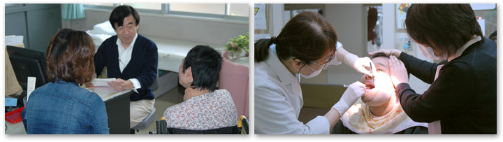
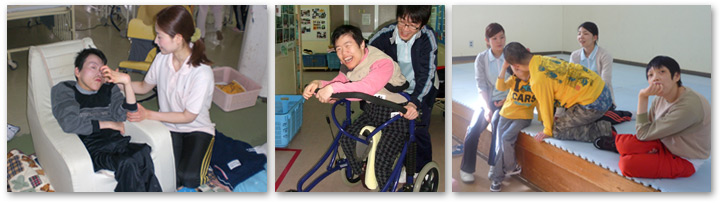
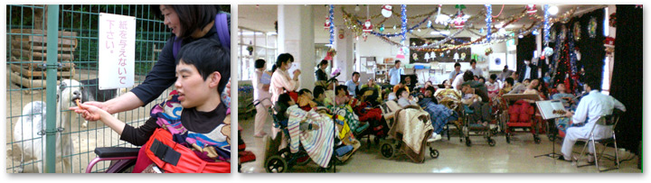
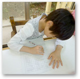

医療型障害児入所施設ゆうかり医療療育センターは、０歳～１８歳の障害のある子どもたちが、ゆうかりの木に集う家族のように、濃厚な医療と療育及び教育に支えられながら、明るい未来に向かって日々の生活を伸び伸びと楽しむ施設です。
それぞれの専門スタッフは、「将来、自分の好きな地域で暮らす」という自主自立の目標を達成させるため、また一人ひとりの個性を伸ばし自己実現の喜びを知るために、さまざまな療育活動や社会体験を通じて心温かく支援しています。
|

 日課表 |
年間行事 |
|
6:30 起床
7:30 朝食
10:00 グループ・個別活動
12:00 昼食
13:30 レクリエーション
14:30 入浴・おやつ
18:00 夕食
18:30 個別活動
21:00 就寝・消灯
|
春
花祭り、端午の節句、誕生会、ドライブ、カラオケ、遊園地外出
夏
七夕祭り、食事会、盆踊り花火大会、誕生会、買い物外出
秋
運動会、一泊旅行、動物園外出、空港見学、誕生会
冬
クリスマス会、食事会、温泉外出、節分、ひな祭り、誕生会
|
| ※9:00～14:35 就学児童は学校 |
|
|
ゆうかり医療療育センターは、児童福祉法に定める障害児入所施設と障害者自立支援法に定める療養介護事業所からなっていますが、それと同時に医療法に定める病院としての機能も併せ持っています。医療専門スタッフが、基礎疾患への対応は勿論、入所利用者の日々の健康ならびに疾病の予防に努めています。
 |
|
0～18歳の利用者様に対してゆうかり医療療育センターでは理学療法・作業療法および言語聴覚療法によるリハビリテーション（以下、リハビリと略す）を行っています。
マンツーマンのリハビリだけでなく、集団や屋外でのリハビリなど形式は様々で、能力の向上だけでなく楽しみながら取り組んでもらえるリハビリを心がけています。また作業活動による作品展への応募やイベントへの参加などを通し、施設内だけでなく外のつながりを持てるようなリハビリを行っています。
日々のリハビリを始めとした各療育活動を通し、利用者様がより自立度の高い生活や社会参加をすることによるQOLの向上を目標にリハビリを実施しています。

|
|
平日は田主丸特別支援学校へ登校しており、休日はゲームをしたり散歩に行ったりと、各々好きな事をされて過ごされています。また絵を描くことや詩を書く児童もおり、素晴らしい作品を見せてくれています。
自立を目指した取り組みとしては、入浴や洗濯、夕食準備等の身辺自立から自ら外出等の計画をして行う社会適応訓練等も実施しており、日頃から様々な経験を積んでいます。

|
|
 就学児は併設する田主丸特別支援学校に通い、それぞれの児にあった取り組みがされており、また医療ケアが必要な方には学校の先生に来て頂き、訪問学級をして頂いています。
学園のスタッフと学校の先生で情報交換をする場も設けており、一人一人の情報を共有出来るようにしています。他学校との交流会もあり、学校においても様々な経験が積めるように取り組んでいます。
|

当センター担当医による診察を受けていただいた後、利用契約を結んでいただくことが必要です。尚、契約にあたりましては、障害児施設給付の支給決定が必要となりますので、お近くの児童相談所（福岡、久留米、田川、大牟田、宗像・京築、北九州市、福岡市）において申請手続きをお願いします。
|